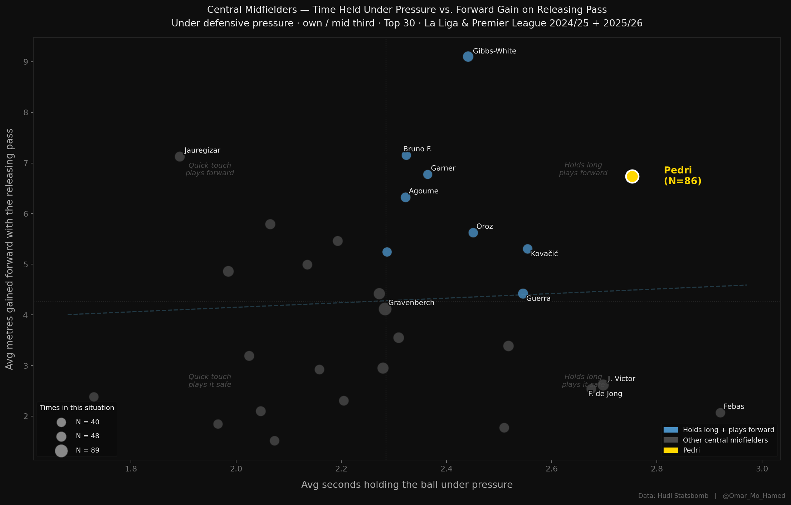

Football Analytics
Two Seconds Nobody Else Has
An original analysis of Pedri's composure under pressure — measuring how long central midfielders hold the ball in congested zones before releasing, and how far forward that release travels. Across 86 qualifying situations in La Liga and the Premier League, Pedri occupies a corner of the chart that belongs to him alone: holding longer and still finding the forward pass.
Read the Full Article →